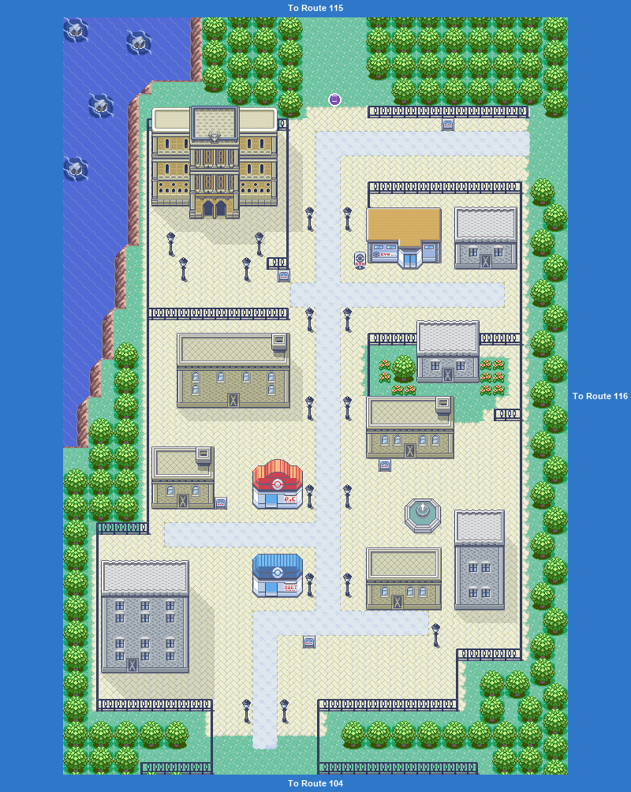
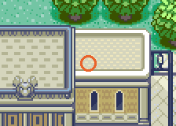
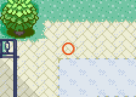

Not yet. Beat the gym first, then chase the Flamingo grunt who steals the Devon Goods on Route 116. Bring the goods back here to Mr. Stone for the PokéNav and a letter for Steven.

Free Quick Claw from the teacher inside. The Pokémon Center is just south of the gym.
| ARival MAY: Lotad LV13WaterGrass; Bagon LV15Dragon; Torchic LV15Fire |
| BRival MAY: Torkoal LV13Fire; Tirtouga LV15WaterRock; Mudkip LV15Water |
| CRival MAY: Wingull LV13Water; Ducklett LV15Water; Treecko LV15Grass |
| DRival BRENDAN: Lotad LV13WaterGrass; Scraggy LV15DarkFighting; Torchic LV15Fire |
| ERival BRENDAN: Slugma LV13Fire; Chewtle LV15Water; Mudkip LV15Water |
| FRival BRENDAN: Wingull LV13Water; Aipom LV15Normal; Treecko LV15Grass |
Static encounters: walk up and press A. Caught = gone for good; beaten or fled = back next visit.